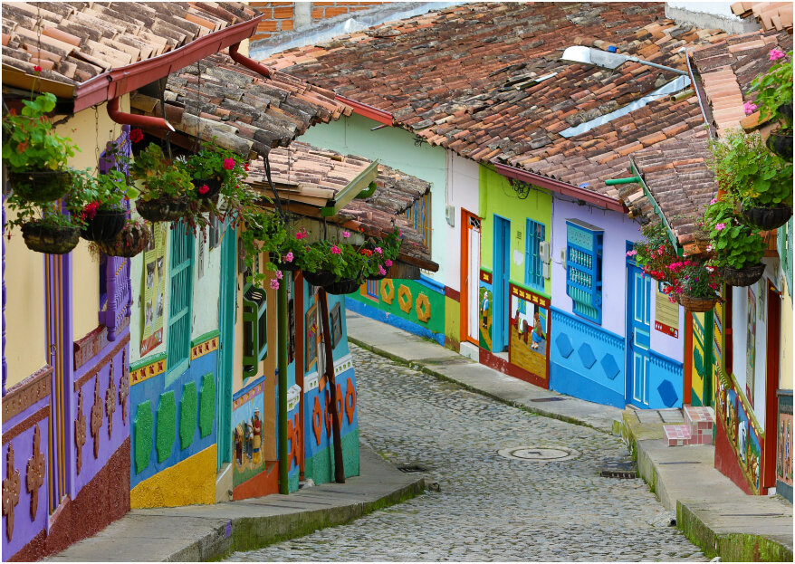

Lugares magicos
Nudo del Jirijirimo

Al final de la cuenca del río Apaporis, en el límite entre los departamentos del Vaupés y el Amazonas, se encuentran las cascadas más hermosas de Colombia. conoce un poco mas...
Pueblito Paisa
Uno de lo sitios con mas tradición antioqueña que se refleja en las artesanías, gastronomía y arquitectura del lugar, con la vista majestuosa de Medellín y las montañas que recorren el Valle de Aburrá. conoce un poco mas...
Isla Gorgona
Es un santuario natural con un oscuro pasado, porque abandonarla y quedar en medio del océano resultaba la más desquiciada misión, pero a pesar de su oscuro pasado, el verde que la compone y el azul que la rodea le da brillo a su exuberancia. conoce un poco mas...